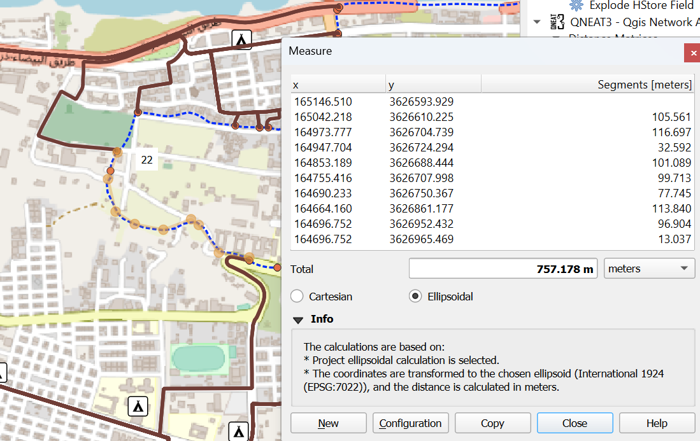

Results and Discussion
Analysis
Before Scenario
Evacuation Time
From our findings, the routes range from a distance of 2.3km to 4.8km. Assuming a 4-6 km/h walking speed for people, it would take less than half an hour to an hour for people to evacuate by foot.
By vehicle, it takes about 4 minutes 5 seconds to 6 minutes 12 seconds to evacuate, using the speed assumptions (50km/h for motor roads, 15km/h for service and unclassified roads, 5km/h for pedestrian roads) and not accounting for delays due to traffic congestion.
Roughly multiplying the time taken by 10, we get an estimate of around 41-62 minutes for a person to walk. This estimate is slightly higher than that of the previous walking duration estimation, but may be more accurate in accounting for fatigue or congestion, or vulnerable populations like children, elderly and people with disabilities.
These routes are still reasonable considering the 5-8 hours heads-up the residents received - that they have enough time to get home to find essential emergency items or family members and evacuate.
Shelter Overcrowding
As seen in the map, the python algorithm was successful in assigning neighbourhood centroids to maximise the use of shelters. The neighbourhood centroids closest to the perimeter of the flood extent are assigned to the furthest shelters as expected, allowing them to escape earlier to reduce congestion with the people deeper within in the flood extent.
As mentioned, the main downside of having assigned routes is that some routes may experience congestion due to traffic bottlenecks (multiple neighbourhoods of people are passing through the same road). However, this can be mitigated as the locals would have knowledge of the alternative routes in the city in case of congestion.
As measured, the combined area of the shelters outside of the flood extent (used in before and during scenarios) is 3 hectares though the total area of the residential buildings is 50 hectares. Though this does not account for the number of storeys each building has, it is a sign that the existing shelters may not be sufficient to hold all evacuees.
We divide the current area of shelters (assuming at least 1 storey of free space) 33,251m2 by UNHCR’s standard of 3.5m2 per person, to get an estimate of a capacity of more than 9,500 people, which pales in comparison to the 24,500 displaced residents figure.This could be sufficient if the shelters have almost 3 storeys of usable space (85,750m2), but we currently lack data on building heights.
Cross-referencing the UN’s 21st September update, in reality only 6 schools were used as designated sites to hold evacuees. Though we are unsure of UN’s considerations in selecting the holding sites, our maps present a possibility of using mosques and hotels as shelters to accommodate more evacuees and save more lives. In the event that our solution remains insufficient, people could also move out of Derna to nearby cities to escape, as the UNOCHA report had noted. The potential lack of shelter capacity should not stop people from evacuating before the flood.
During Scenario
Evacuation to Shelters
The map created shows all possible routes from start points from the edge of the flood extent (black paths) to all safe and undamaged shelters - evacuation centres - outside the flood extent. It also shows the shortest routes (red paths) from each specific start point to their nearest shelters. The route with the shortest distance from a start point to a shelter is 41.60 metres while the route with the longest distance from a start point to a shelter is 5380.93 metres. The great disparity between the shortest route and the longest route shows that some shelters are far more inaccessible than others, such as the one on the extreme bottom right corner of the map. This is evident in the relatively sparse distribution of shelters and the lack of suitable road networks that lead to those that are further away from the start points.
Most of the shortest paths also lead to the same few shelters. This makes sense since those shelters are closest in proximity to the damaged flood area.
Upon further analysis, most of the shortest paths from the start points on the left side of the flood extent lead to three of the nearest shelters (circled in yellow) as shown in Zoom-in Map 1 inserted above. Many shelters further away from the flood extent are not included in the evacuation map’s shortest path to safety. The second map also reveals that some shelters (circled in green), though in close proximity to other surrounding shelters, have no path mapped to them. This could possibly be due to the affected road network which the OD Matrix algorithm could not account for. This means that many shelters will be underutilised if all evacuees choose to go to the nearest shelter.
Moreover, this evacuation map is generated under the assumption that people will be using walking as the primary means to travel from a start point to a shelter, as it is unlikely that vehicles could be used for transportation during the flood, especially starting from the flood extent. In reality, it is possible that there may be alternative routes, such as desire paths, that are more intuitive and efficient for people to use for evacuation to the first shelter they see.
Although the shortest paths show the general routes that would be most convenient for people to use for evacuation to their nearest shelters, this might lead to overcrowding in those few particular shelters. Therefore, it is recommended that people travel to the next nearest shelter if the ‘Shortest Path’ leads them to a shelter that has already maximised its capacity, using ‘All Routes to Shelters’.
Evacuation to Hospitals

The map created shows all possible routes from start points from the edge of the flood extent (black paths) to all medical centres - hospitals - outside the flood extent. It also shows the shortest routes (red paths) from each specific start point to their nearest hospital. The route with the shortest distance from a start point to a hospital is 818.28 metres while the route with the longest distance from a start point to a hospital is 4427.44 metres. This shows that some start points are considerably closer in proximity to a hospital than others.
The map also shows that there are only three hospitals which people can evacuate to for medical care outside the flood extent. As seen from the map inserted below, all routes to the nearest hospital from start points on the left side of the flood extent are also all the shortest paths to the hospital, as there is only one hospital in that vicinity. This suggests potential overcrowding in this hospital, and people who are severely injured during the flood and attempting to evacuate from start points nearer the coastline are likely unable to travel to the hospital on foot unless there are emergency ambulances deployed to help them.
The map above indicates that most of the routes to hospitals from start points on the right side of flood extent go to the hospital nearest to the flood extent. This is due to the skewed distribution of hospital locations as the last hospital is situated far away from the start points.
Due to the scarcity of medical centres, it is possible that these hospitals will be overcrowded and their manpower and supplies exhausted to tend to patients. As such, it is recommended that field hospitals or mobile clinics be deployed to remote areas nearer to the flood extent or to evacuation centres with people who require the most medical care.
Medical Accessibility
We learnt from team 8's poster showcase to consider the accessibility to hospitals from the shelters. We consider only vehicle timings as we realise the shortest paths may be too far to walk by foot, especially for someone who is injured. Hence, we assume that the injured are able to call an ambulance from the hospital to fetch them. The time taken to send them to the hospital would be double of the time spent on the route as the ambulance has to go back and forth: leave the hospital to fetch them, then send them to the hospital.
The most likely sickness that could occur at shelters are likely to be diarrhoea from damaged water supplies, or infections, hence we consider the 11 minutes maximum to be reasonable. There are also likely other people with phones to make timely calls for ambulances, and vehicles of other evacuees that would hasten sending the sick to the hospitals in less than 6 minutes (one-way journey instead of back-and-forth).

We consider the 15 minutes maximum time to dispatch an ambulance and fetch the injured people from the flood extent reasonable, though we note limitations such as the possibility of the injured not having a working phone with them, or having to walk up to 379 metres to the nearest startpoint with their injuries after having escaped the flood.
Also, we used a different set of road networks from the shortest path analysis in the during scenario (from startpoints to shelters and hospitals). We used OSM roads as it had information on road types (for speeds) and directions to run out fastest time path analysis, compared to the EMSR roads for shortest distance analysis. As such, there were discrepancies where all 60 start points were accessible by EMSR roads but only 46 for OSM roads network. As such, our fastest path analysis was unable to account for 14 of the startpoints.
After Scenario
For the logistical and water resupplies, we decided to map the shortest path in order to ensure that any people returning back to their homes will have sufficient resources and supplies. The shelters and hospitals would likely be overcrowded, and people will want to return home as well. In the event of a post-flood, we want to ensure that those residents returning home have sufficient supplies and proper water resources. Hence, we mapped the shortest, most accessible routes for both resupplies using the Shortest Path analysis function.
We found that there were some centroid points where there weren’t any networks/paths found to lead to it from the starting point. This is due to the unavailability of roads directly to that specific point, hence for those points we can assume that the resupplies needed for that area can be received from the nearest point to it where the possible routes end instead. Given the numerous centroids, and the many specific paths provided by the analysis, we can still use these networks to resupply even if there is not a specific route directly connected to it.
For a lot of the paths, we noticed that a few of the paths would diverge from a similar starting point, before heading towards the centroids.


An example is these 2 corners shown, where there were multiple paths diverging depending on the centroids they are heading towards. For suppliers (in the future to centroids, shelters and hospitals), they could place and store resupplies near these diverging points. The trucks and vehicles would then be able to pick up more supplies from these areas on the way to their destination points. It would decentralise any resupply points and reduce the potential load of the vehicles carrying supplies from these points that are very far away from the city. Hence, potential resupplies can be first dropped off at these points, in larger quantities, before being picked up by other vehicles in the area in order to be sent to the destinations. This would ensure faster resupplies, as vehicles would be able to move faster, more frequently and more efficiently to their destinations.
Resupplies Outside Flood Extent
We also assumed that people will attempt to return to their homes in the aftermath of the flood and thereby planned out logistical and water resupply routes to the residential areas that had been affected by the flood. However, we also recognise that many survivors might also choose to remain in the shelters until their homes are restored into their original conditions, and hospitals may require more supplies than usual. Hence, we also mapped the logistical and water resupply to shelters and hospitals.
Though not presented in our physical poster, we mapped out the supply routes to hospitals and shelters outside the flood extent. These utilise roads that have not been damaged by the floods, and can be used in the Before Flood and After Flood scenarios. As some routes cross the flood extent, they are not advisable for use in the During Flood scenario.
While the After Flood scenario focused on the likely case of providing aid to people who moved back home after the flood has subsided, these maps look into potential use cases of readying the shelters and hospitals before the flood, and resupplying them in the first few weeks after the flood. Supplies in the Before Flood scenario should be enough to last people for 2-3 days for the duration of the flood, while supplies in the After Flood scenario may come as and when replenishments are required.
The water and logistics resupply routes during the flood take up to 3 hours, and less than 2 hours in the before and after scenario.
Before and After Resupply Maps

Discussion
The residents of Derna were warned of the storm 5-8 hours before the flood, though they received conflicting instructions. Our Before Flood scenario constructs a possible assignment of evacuation routes per neighbourhood. As a back-up for those who did not evacuate in time, they can refer to the During Flood scenario map to find the nearest dry road and shelter. As the supplies in the shelters are used and the supplies in the flooded neighbourhoods perish, our After Flood scenario maps the supply routes to the flooded neighbourhoods where we expect most people to return to. We also mapped resupply routes to the hospitals and shelters relevant to the three stages of the disaster.
As the 10th September flood in Derna was the one of worst possible flooding due to the simultaneous double dam collapse and hurricane (as it is the 2nd worst recorded dam failure so far (Wikipedia, 2023) and worse than Libyan major floods seen in 1960-2000 (Ashoor, 2022; Motamedi, 2023)) we suggest the construction of evacuation and medical centres in the city. Our maps above reveal the danger of overcrowding in the existing shelters and hospitals in Derna due to the shortage of such emergency facilities. In order to alleviate any overcrowding, we recommend more shelters to be set up or designated and hospitals to be built in the city, especially in remote areas which are currently furthest away from existing facilities. For evacuation centres, this can be done by finding other buildings to repurpose, in particular those with a larger capacity and suitable infrastructure to house more people. In the meantime, if a similar natural disaster occurs again and there are insufficient shelters and hospitals, temporary emergency services can be set up in inaccessible areas that lack adequate road networks and infrastructure.
In most of our maps (those we did shortest path analysis on), we assumed that during an emergency, all roads can be used as two-way streets which allow vehicles to travel in both directions, to support the transportation of supplies to and fro origin and destination points. However, there is a chance that this may increase the risk of traffic accidents.
Future Work and Recommendations
For future work recommendations, we could consider mapping out possible routes from shelter to shelter. As the shelters nearest to the flood extent will likely be congested and overcrowded with a large number of evacuees, we suggest they move to the next nearest shelter for safety. However, our current map model – in the During Flood Scenario – only shows routes from the start points from the edge of the flood to the shelters, and not alternative routes from overcrowded shelters to neighbouring shelters.
Other future work recommendations include:
Collect data on the capacity of the shelters.
Expand list of potential shelters:
Use a wider study area.
Use a more comprehensive dataset of shelters, or collate/clean up all existing accessible datasets.
Possible candidate shelters could be found from shopping centres and community centres. (Learning point from group 7)
Study the use of undamaged buildings after the flood has subsided.
Minimise traffic bottlenecks during evacuation.
Combine multiple trips into a journey: going from the supply source to the shelters in an efficient order, rather than going back and forth to each shelter.
Rank shelters by capacity and proximity to hospital/supplies to prioritise getting people to the better shelters. (Learning point from group 8)
Consider the population density within each neighbourhood in the flood extent. (Learning point from group 3 and 8)
Propose potential sites to build future shelters. (Learning point from group 2)
Propose points (amongst flood edge points or shelters) to deploy ambulances to or set up field hospitals at.
Conclusion
In conclusion, we appreciated the opportunity to be able to use QGIS for a real-life use case, studying a recent disaster that would serve as a warning for future generations to come. We demonstrated a time-based scenario perspective of working on the problem, catering to differing needs (evacuation and supplies) and behaviour at various stages of the disaster management. Though our evacuation routes are of reasonable durations that can save lives, we acknowledge challenges such as congestion and overcrowding. These can be mitigated by using alternative routes (using local knowledge of roads or OD matrix), expanding the list of the potential shelter sites, and further investigations into building capacities.
Those who require medical help may require field hospitals or ambulance fetching as it is unlikely for them to make it to the hospitals on their own during the flood. Ways to improve the efficiency of the supply routes include storing resupplies near where roads diverge, and combining multiple trips. Future work could also study ranking shelters by capacity and accessibility to amenities, and proposing sites to build future shelters or medical amenities.